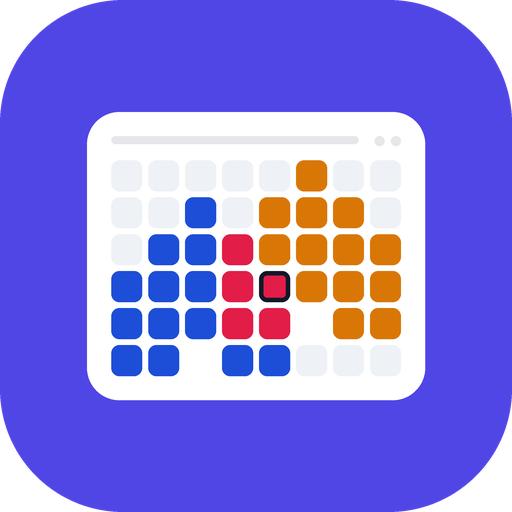

<!doctype html>
<!--
  T-102 (video v2) — the ad video, as ONE deterministic page.

  build.mjs opens this file with ?w=<width>&h=<height>&cut=<seconds>, calls
  window.seek(t) for every frame (t in seconds) and screenshots the page: no CSS
  animation, no clock — every pixel is a pure function of t, so two runs cut
  the same file and a frame can be inspected on its own.

  The phone shows the app's REAL screens (store/ads/video/src/*.png, written by
  app/store_ads/video_frames_test.dart). Everything drawn here is caption,
  outline and pointer; the words follow the ad kit's rules (S-15: neutral,
  never a side, no price, no promise of outcome; U-57: no operator-editable
  number; U-31: no emoji).
-->
<html lang="pt-BR">
<head>
<meta charset="utf-8">
<style>
  @font-face { font-family: Inter; font-weight: 400; src: url(../../../app/assets/fonts/Inter-Regular.ttf); }
  @font-face { font-family: Inter; font-weight: 500; src: url(../../../app/assets/fonts/Inter-Medium.ttf); }
  @font-face { font-family: Inter; font-weight: 600; src: url(../../../app/assets/fonts/Inter-SemiBold.ttf); }
  @font-face { font-family: Inter; font-weight: 700; src: url(../../../app/assets/fonts/Inter-Bold.ttf); }
  html, body { margin: 0; padding: 0; background: #4F46E5; overflow: hidden; }
  body { font-family: Inter, sans-serif; color: #fff; -webkit-font-smoothing: antialiased; }
  #stage { position: relative; overflow: hidden; background: #4F46E5; }
  .abs { position: absolute; left: 0; top: 0; }
  .brand { display: flex; align-items: center; gap: 18px; }
  .brand img { display: block; border-radius: 22%; box-shadow: 0 0 0 3px rgba(255,255,255,.28); }
  .brand span { font-weight: 700; letter-spacing: -0.01em; }
  .headline { font-weight: 700; letter-spacing: -0.02em; line-height: 1.08; text-align: center; }
  .sub { font-weight: 500; line-height: 1.3; text-align: center; color: rgba(255,255,255,.92); }
  .cta { display: inline-block; background: #fff; color: #4F46E5; font-weight: 700; border-radius: 999px; }
  .url { font-weight: 600; letter-spacing: 0.01em; color: rgba(255,255,255,.95); text-align: center; }
  .phone { position: absolute; background: #111827; box-shadow: 0 40px 90px rgba(17,24,39,.35); }
  .screen { position: absolute; overflow: hidden; background: #F9FAFB; }
  .screen img { position: absolute; left: 0; top: 0; }
  .ring { position: absolute; border: 6px solid #D97706; box-shadow: 0 0 0 6px rgba(217,119,6,.25), 0 10px 30px rgba(0,0,0,.18); pointer-events: none; }
  .tag { position: absolute; background: #111827; color: #fff; font-weight: 600; white-space: nowrap; border-radius: 999px; box-shadow: 0 8px 24px rgba(0,0,0,.25); }
  .tap { position: absolute; border-radius: 50%; background: rgba(255,255,255,.55); border: 4px solid rgba(255,255,255,.9); }
  .ripple { position: absolute; border-radius: 50%; border: 5px solid rgba(255,255,255,.9); }
  .end { display: flex; flex-direction: column; align-items: center; }
</style>
</head>
<body>
<div id="stage"></div>
<script>
// ───────────────────────────────────────────────────────────── helpers ──
const q = new URLSearchParams(location.search);
const W = +q.get('w') || 1080, H = +q.get('h') || 1920, CUT = +q.get('cut') || 25;
const clamp = (x, a = 0, b = 1) => Math.min(b, Math.max(a, x));
const lerp = (a, b, k) => a + (b - a) * k;
const easeOut = k => 1 - Math.pow(1 - clamp(k), 3);
const easeInOut = k => { k = clamp(k); return k < .5 ? 4 * k * k * k : 1 - Math.pow(-2 * k + 2, 3) / 2; };
// 0 → 1 between t0 and t0+d, eased.
const ramp = (t, t0, d, e = easeOut) => e((t - t0) / d);
// A window: fades in over `fi` from t0, holds, fades out over `fo` before t1.
const win = (t, t0, t1, fi = .35, fo = .3) => Math.min(ramp(t, t0, fi), 1 - ramp(t, t1 - fo, fo, easeInOut));

const stage = document.getElementById('stage');
stage.style.width = W + 'px'; stage.style.height = H + 'px';
const el = (cls, html = '') => { const d = document.createElement('div'); d.className = cls; d.innerHTML = html; stage.appendChild(d); return d; };
const place = (d, { x, y, w, h, o, s = 1, dy = 0, dx = 0, z }) => {
  if (x !== undefined) d.style.left = x + 'px';
  if (y !== undefined) d.style.top = y + 'px';
  if (w !== undefined) d.style.width = w + 'px';
  if (h !== undefined) d.style.height = h + 'px';
  if (o !== undefined) d.style.opacity = clamp(o);
  if (z !== undefined) d.style.zIndex = z;
  d.style.transform = `translate(${dx}px, ${dy}px) scale(${s})`;
};

// ───────────────────────────────────────────────────────────── layout ──
// Three canvases, one content. 9:16 keeps every word between y=250 and
// y=1250 (Reels draws its own UI over the top 250 px and the bottom ~670 px)
// and 60 px from the sides; the phone may run into the bottom band.
const SRC = { w: 1080, h: 2220 };                 // the app's screen, 360×740 dp at 3×
const vertical = H > W, wide = W > H, tall = H / W > 1.5;   // 9:16 is tall; 4:5 is only vertical
const L = tall ? {
  textX: 80, textW: W - 160, brandY: 290, headY: 380, headSize: 88, subY: 600, subSize: 42,
  phoneY: 780, screenW: 560, phoneCX: W / 2, endLogo: 150, endY: 400, textAlign: 'center',
} : wide ? {
  textX: 110, textW: 920, brandY: 250, headY: 360, headSize: 80, subY: 610, subSize: 40,
  phoneY: 70, screenW: 540, phoneCX: 1460, endLogo: 160, endY: 230, textAlign: 'left',
} : {
  textX: 70, textW: W - 140, brandY: 70, headY: 160, headSize: 80, subY: 360, subSize: 38,
  phoneY: 520, screenW: 540, phoneCX: W / 2, endLogo: 150, endY: 380, textAlign: 'center',
};
const screenH = SRC.h * L.screenW / SRC.w;
const FRAME = 16, R = 64;
const scale = L.screenW / SRC.w;   // source px → stage px inside the screen

// ───────────────────────────────────────────────────────────── scenes ──
// Hotspots: boxes measured on the source screens by build.mjs (source px).
const HOT = window.HOTSPOTS || {};
// Two cuts of the same content: the 25 s master and a 15 s version (Meta
// recommends ≤ 15 s). [start, end] per scene; a scene absent from a cut is
// simply not shown.
const CUTS = {
  25: { hook: [0, 3.2], month: [3.2, 8.2], ask: [8.2, 11.6], done: [11.6, 14.6], notice: [14.6, 19.6], end: [19.6, 25] },
  15: { hook: [0, 2.6], month: [2.6, 5.6], ask: [5.6, 8.6], done: [8.6, 11], end: [11, 15] },
};
const S = CUTS[CUT] || CUTS[25];
const has = k => !!S[k];
const at = (t, k) => has(k) && t >= S[k][0] && t < S[k][1];

const WORDS = {
  hook:   ['Quem está com as crianças hoje?', ''],
  month:  ['Duas casas, um calendário só.', 'Os responsáveis veem o mesmo mês e o horário de cada troca de casa.'],
  ask:    ['Precisa trocar um dia?', 'Peça no app. O outro responsável aprova ou recusa.'],
  done:   ['Troca de dia pedida e registrada.', 'A mudança fica registrada no histórico da família.'],
  notice: ['Imprevisto no dia? Mande um aviso.', 'Avisos, pedidos de troca e relatos do dia chegam como notificação.'],
};
const SHEET_SCROLL = wide ? 120 : 470;   // source px the sheet scrolls up in the ask scene (16:9 has room)
const SCREEN_OF = { hook: 'cal', month: 'cal', ask: 'sheet', done: 'cal-after', notice: 'notif' };

// ───────────────────────────────────────────────────────────── elements ──
const brand = el('abs brand', `<span style="font-size:44px">Entrelares</span>`);
brand.style.left = L.textX + 'px'; brand.style.top = L.brandY + 'px';
if (L.textAlign === 'center') { brand.style.width = L.textW + 'px'; brand.style.justifyContent = 'center'; }

const heads = {}, subs = {};
for (const k of Object.keys(WORDS)) {
  heads[k] = el('abs headline', WORDS[k][0]);
  place(heads[k], { x: L.textX, y: L.headY, w: L.textW, o: 0 });
  heads[k].style.fontSize = L.headSize + 'px'; heads[k].style.textAlign = L.textAlign;
  subs[k] = el('abs sub', WORDS[k][1]);
  place(subs[k], { x: L.textX, y: L.subY, w: L.textW, o: 0 });
  subs[k].style.fontSize = L.subSize + 'px'; subs[k].style.textAlign = L.textAlign;
}

const phone = el('phone');
phone.style.borderRadius = R + 'px';
place(phone, { x: L.phoneCX - L.screenW / 2 - FRAME, y: L.phoneY, w: L.screenW + 2 * FRAME, h: screenH + 2 * FRAME });
const screen = document.createElement('div'); screen.className = 'screen'; phone.appendChild(screen);
screen.style.left = FRAME + 'px'; screen.style.top = FRAME + 'px';
screen.style.width = L.screenW + 'px'; screen.style.height = screenH + 'px';
screen.style.borderRadius = (R - FRAME) + 'px';
const shots = {};
for (const name of ['cal', 'sheet', 'cal-after', 'notif']) {
  const img = document.createElement('img');
  img.src = `src/${name}.png`; img.width = L.screenW; img.height = screenH; img.style.opacity = 0;
  screen.appendChild(img); shots[name] = img;
}
const overlay = document.createElement('div'); overlay.className = 'abs'; overlay.style.zIndex = 5; overlay.style.width = L.screenW + 'px'; overlay.style.height = screenH + 'px'; screen.appendChild(overlay);
const ring = document.createElement('div'); ring.className = 'ring'; overlay.appendChild(ring);
const tag = document.createElement('div'); tag.className = 'tag'; overlay.appendChild(tag);
const tap = document.createElement('div'); tap.className = 'tap'; overlay.appendChild(tap);
const ripple = document.createElement('div'); ripple.className = 'ripple'; overlay.appendChild(ripple);
const press = document.createElement('div'); press.className = 'abs'; press.style.background = 'rgba(17,24,39,.18)'; overlay.appendChild(press);
const veil = document.createElement('div'); veil.className = 'abs'; veil.style.width = L.screenW + 'px'; veil.style.height = screenH + 'px';
veil.style.background = `linear-gradient(to bottom, rgba(249,250,251,0) ${Math.round(1300 * scale)}px, rgba(249,250,251,1) ${Math.round(1440 * scale)}px)`; overlay.appendChild(veil);

// The end card.
const end = el('abs end', `
  
  <div class="headline" style="font-size:${L.headSize + 8}px;margin-top:36px">Entrelares</div>
  <div class="sub" style="font-size:${L.subSize + 4}px;margin-top:22px">O essencial é gratuito.</div>
  <div class="cta" style="font-size:${L.subSize + 10}px;padding:26px 64px;margin-top:44px">Comece grátis</div>
  <div class="url" style="font-size:${L.subSize}px;margin-top:40px">entrelares.app</div>`);
place(end, { x: 0, y: L.endY, w: W, o: 0 });

// ───────────────────────────────────────────────────────────── per frame ──
// A box in source px → stage px inside the screen, with a margin.
const box = (b, m = 10) => ({ x: b.x * scale - m, y: b.y * scale - m, w: b.w * scale + 2 * m, h: b.h * scale + 2 * m });
const setBox = (d, b, o, extra = {}) => { place(d, { x: b.x, y: b.y, w: b.w, h: b.h, o, ...extra }); };
const hide = d => { d.style.opacity = 0; };

function screenAt(t) {
  // Which screen the phone shows, and the crossfade into it.
  for (const k of Object.keys(S)) {
    if (!at(t, k) || !SCREEN_OF[k]) continue;
    return { name: SCREEN_OF[k], k, local: t - S[k][0] };
  }
  return null;
}

window.seek = function (t) {
  t = clamp(t, 0, CUT);
  const endIn = has('end') ? ramp(t, S.end[0], .5) : 0;

  // Brand row: on from the first frame, gone with the end card.
  place(brand, { o: 1 - endIn });

  // Captions: each scene's words slide in and out inside its window.
  for (const k of Object.keys(WORDS)) {
    if (!has(k)) { hide(heads[k]); hide(subs[k]); continue; }
    const [a, b] = S[k];
    const lead = k === 'hook' ? .5 : 0;   // the hook is readable on frame 0
    const o = win(t, a - lead, b, .4, .3);
    const inDy = (1 - ramp(t, a - lead, .5)) * 40, outDy = -ramp(t, b - .3, .3, easeInOut) * 30;
    place(heads[k], { o, dy: inDy + outDy });
    subs[k].style.top = (L.headY + heads[k].offsetHeight + 30) + 'px';
    const so = k === 'hook' ? 0 : win(t, a + .25, b, .4, .3);
    place(subs[k], { o: so, dy: (1 - ramp(t, a + .25, .5)) * 40 + outDy });
  }

  // The phone: rises in the hook, breathes in the month scene, leaves
  // before the end card.
  const rise = ramp(t, 0, 1.0);
  const leave = has('end') ? ramp(t, S.end[0] - .45, .6, easeInOut) : 0;
  // The push-ins grow DOWNWARD from the phone's top edge, so the words above
  // it are never covered.
  let zoom = 1;
  if (has('month') && t >= S.month[0] - .3 && t < S.month[1] + .3) {
    const k = ramp(t, S.month[0] - .3, S.month[1] - S.month[0] + .3, easeInOut);
    zoom = lerp(1, 1.08, k);
  } else if (has('notice') && t >= S.notice[0] && t < S.notice[1]) {
    zoom = lerp(1, 1.07, ramp(t, S.notice[0], S.notice[1] - S.notice[0], easeInOut));
  }
  phone.style.transformOrigin = '50% 0';
  const phoneDy = (1 - rise) * (vertical ? 620 : 520) + leave * (vertical ? 1100 : 900);
  place(phone, { o: 1 - leave * .3, s: zoom, dy: phoneDy });

  // Which screen is on the phone.
  const cur = screenAt(t);
  const fadeDur = .45;
  for (const name of Object.keys(shots)) shots[name].style.opacity = 0;
  if (cur) {
    shots[cur.name].style.opacity = 1;
    // Crossfade from the previous scene's screen, when it differs.
    const prevKey = Object.keys(S).find(k => S[k][1] === S[cur.k][0]);
    const prev = prevKey && SCREEN_OF[prevKey];
    if (prev && prev !== cur.name) {
      const kf = ramp(cur.local, 0, fadeDur, easeInOut);
      shots[prev].style.opacity = 1 - kf;
      shots[prev].style.zIndex = 2; shots[cur.name].style.zIndex = 1;
      // The sheet slides up as it arrives; the month after approval comes in still.
      if (cur.name !== 'sheet') shots[cur.name].style.transform = '';
    } else {
      shots[cur.name].style.zIndex = 1;
      if (cur.name !== 'sheet') shots[cur.name].style.transform = '';
    }
  }
  // The sheet: slides in with the crossfade, then scrolls up (a thumb's
  // flick) so the two buttons sit higher in the frame; it keeps that
  // position while the month after the approval fades over it.
  if (has('ask')) {
    const local = t - S.ask[0];
    const slide = (1 - ramp(local, 0, fadeDur, easeInOut)) * 60;
    const scroll = -SHEET_SCROLL * scale * ramp(local, .9, .6, easeInOut);
    shots.sheet.style.transform = `translateY(${slide + scroll}px)`;
  }

  // Pointers.
  hide(ring); hide(tag); hide(tap); hide(ripple); hide(press); hide(veil);
  if (cur && cur.k === 'hook' && HOT.today) {
    const b = box(HOT.today, 8), k = ramp(cur.local, 1.6, .5), o = win(t, S.hook[0] + 1.6, S.hook[1] + .2, .5, .25);
    setBox(ring, b, o, { s: lerp(1.08, 1, k) }); ring.style.borderRadius = '22px';
  }
  if (cur && cur.k === 'ask' && HOT.approve) {
    // The finger lands on Aprovar near the end of the scene.
    const b = box(HOT.approve, 0);
    b.y -= SHEET_SCROLL * scale * ramp(cur.local, .9, .6, easeInOut);
    const t0 = S.ask[1] - S.ask[0] - 1.1, k = ramp(cur.local, t0, .25);
    const cx = b.x + b.w / 2, cy = b.y + b.h / 2, r = 36;
    if (cur.local >= t0 - .6) {
      const approach = ramp(cur.local, t0 - .6, .6);
      place(tap, { x: cx - r + (1 - approach) * 140, y: cy - r + (1 - approach) * 220, w: 2 * r, h: 2 * r, o: approach, s: lerp(1, .85, k) });
    }
    if (cur.local >= t0) {
      const rk = ramp(cur.local, t0, .7);
      place(ripple, { x: cx - r, y: cy - r, w: 2 * r, h: 2 * r, o: 1 - rk, s: lerp(1, 3.2, rk) });
      setBox(press, { x: b.x, y: b.y, w: b.w, h: b.h }, (1 - ramp(cur.local, t0 + .15, .4)) * 1); press.style.borderRadius = '12px';
    }
  }
  if (cur && cur.k === 'done' && HOT.swapped) {
    const b = box(HOT.swapped, 8), o = win(t, S.done[0] + .35, S.done[1] + .2, .4, .25), k = ramp(cur.local, .35, .5);
    setBox(ring, b, o, { s: lerp(1.25, 1, k) }); ring.style.borderRadius = '18px';
    tag.textContent = 'Trocado'; tag.style.fontSize = '26px'; tag.style.padding = '12px 22px';
    tag.style.opacity = 1; const tw = tag.offsetWidth;
    place(tag, { x: b.x - tw - 18, y: b.y + b.h / 2 - 25, o: win(t, S.done[0] + .7, S.done[1] + .2, .35, .25), dy: (1 - ramp(cur.local, .7, .4)) * 12 });
  }
  if (cur && cur.k === 'notice' && HOT.notice) {
    const b = box(HOT.notice, 6), o = win(t, S.notice[0] + .7, S.notice[1] + .2, .4, .25), k = ramp(cur.local, .7, .5);
    setBox(ring, b, o, { s: lerp(1.06, 1, k) }); ring.style.borderRadius = '18px';
    place(veil, { o: ramp(cur.local, 0, .45) });
  }

  // The end card.
  place(end, { o: endIn, dy: (1 - endIn) * 50 });
};
window.seek(0);
</script>
</body>
</html>
